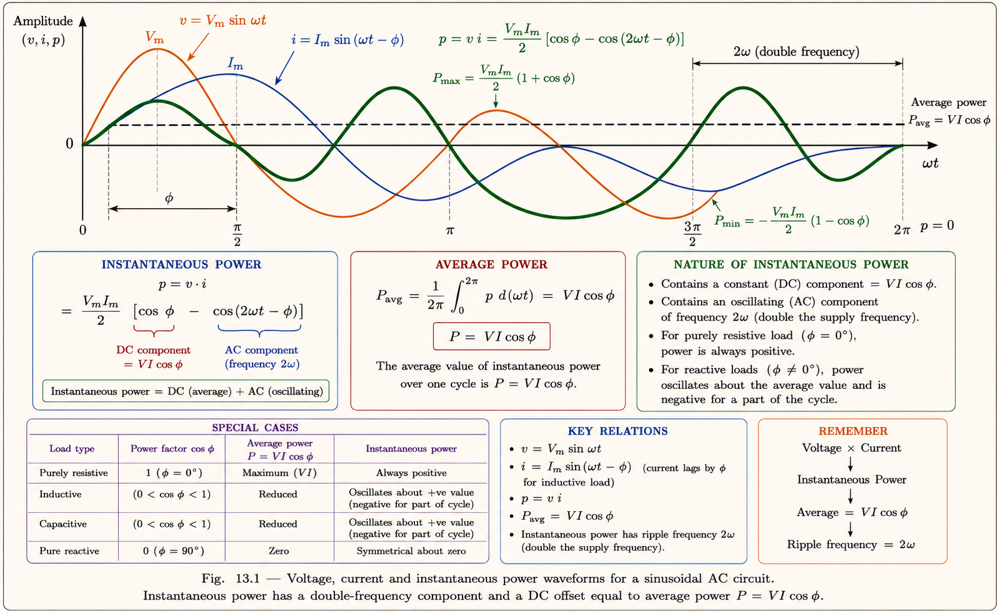
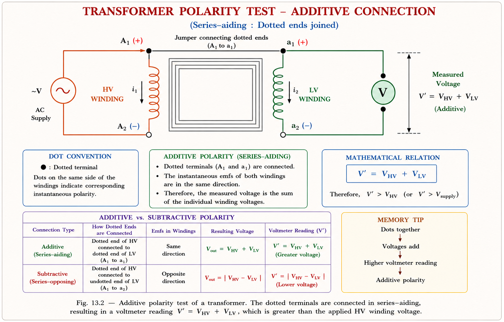
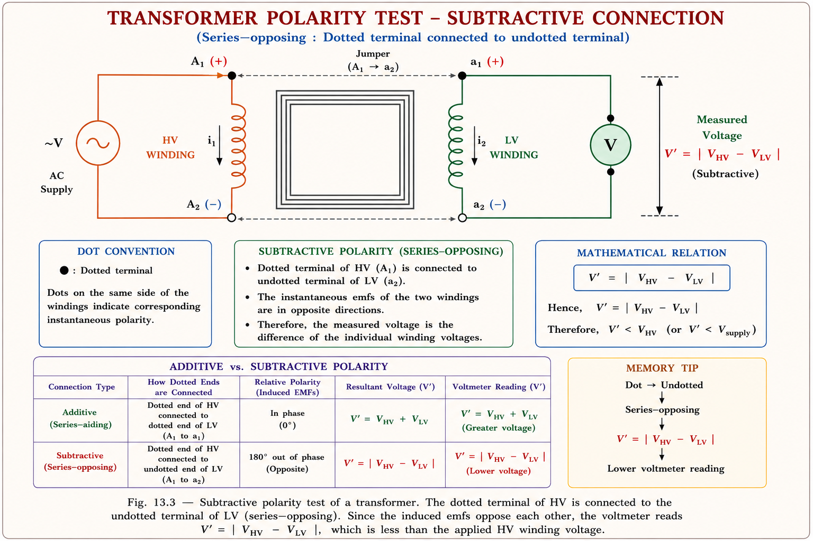
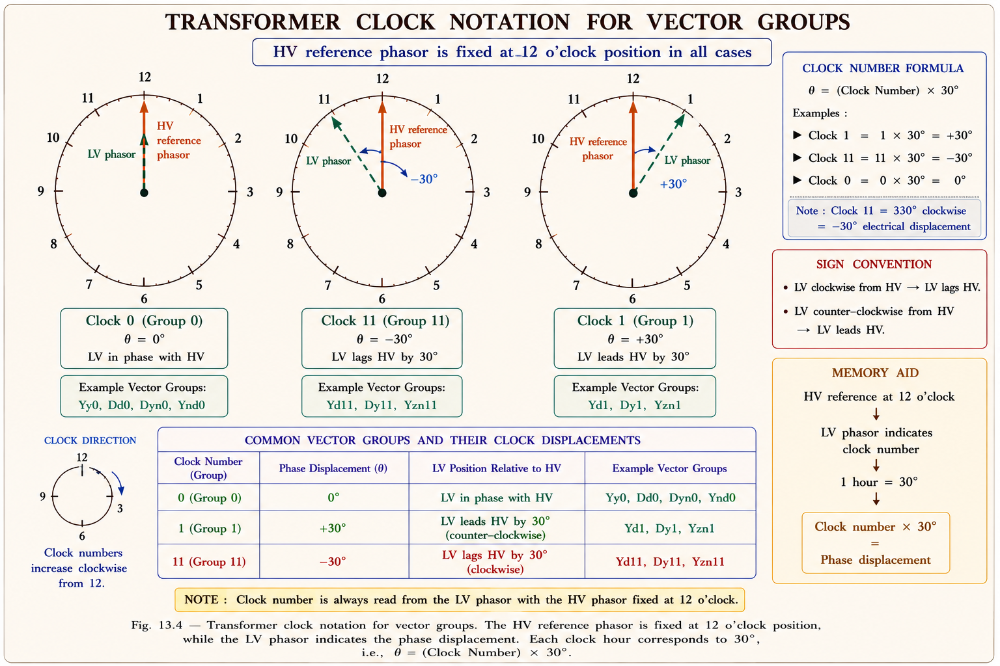
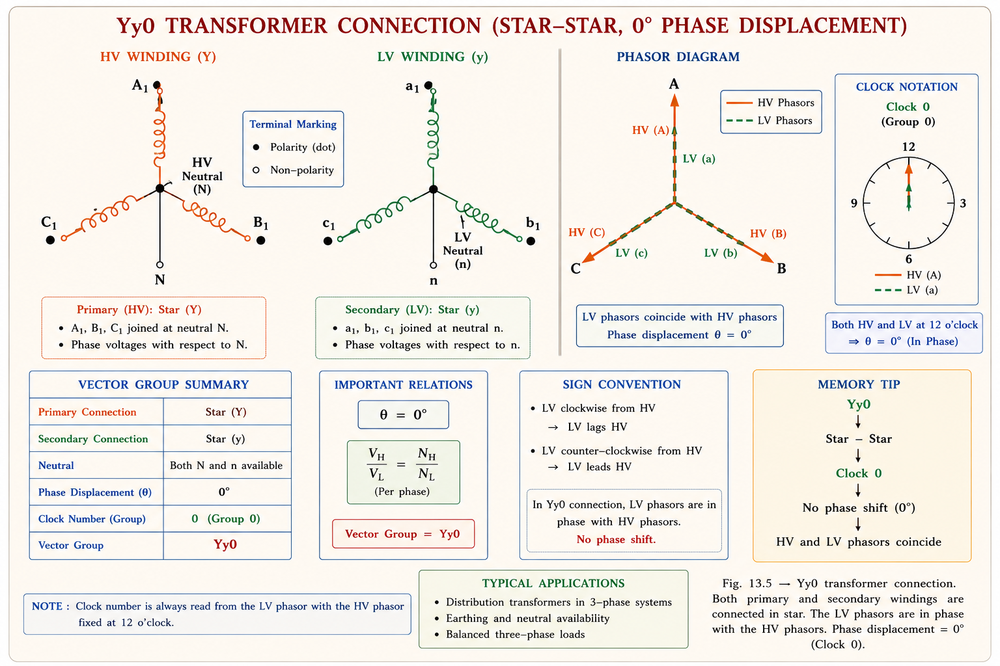
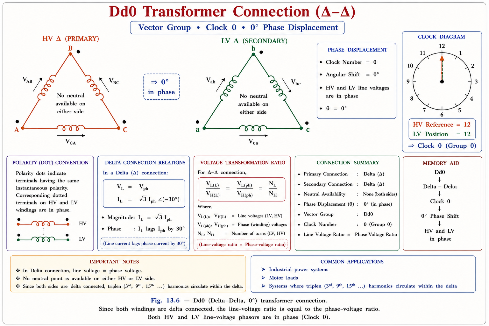
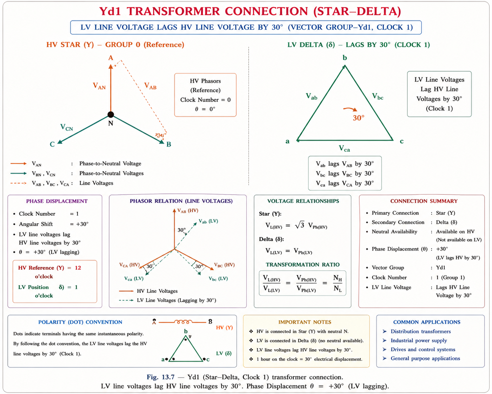
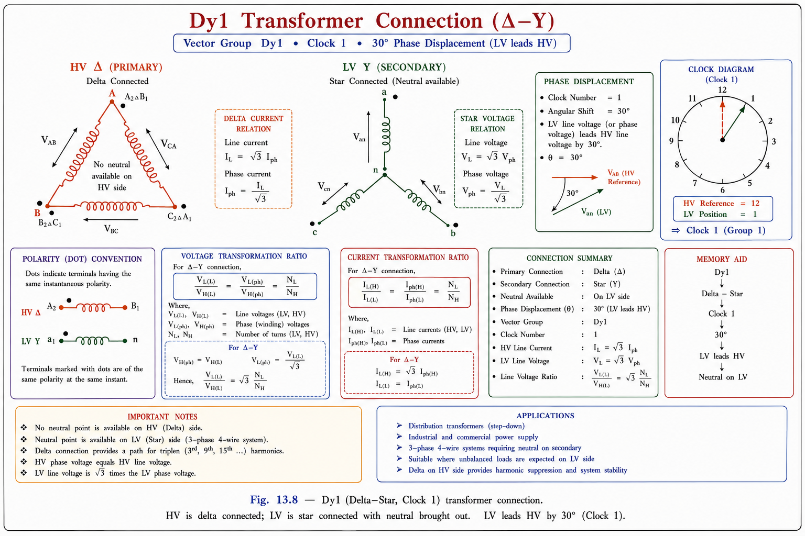
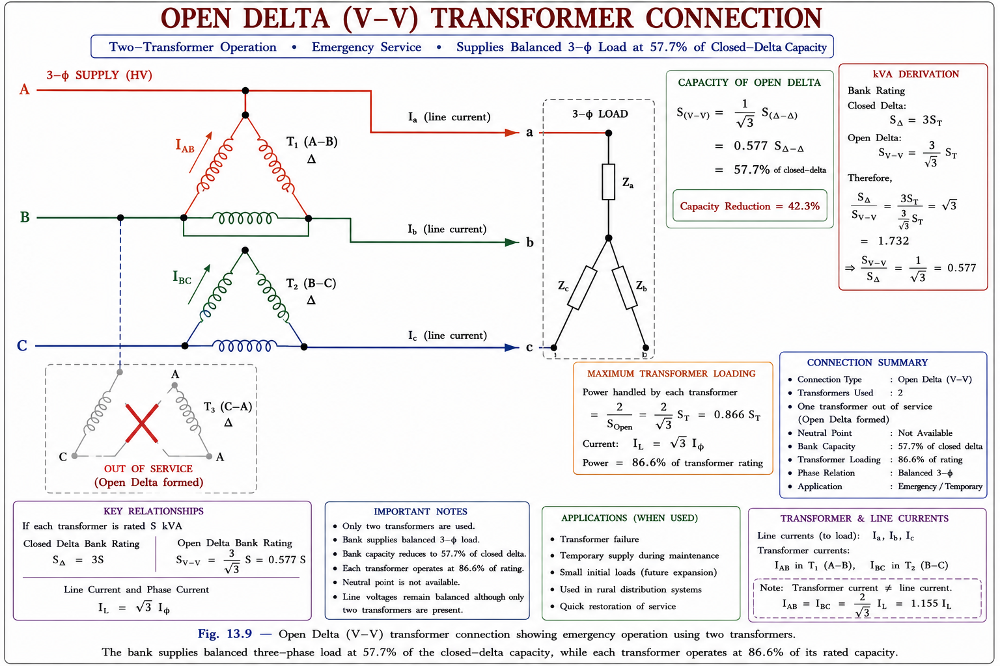
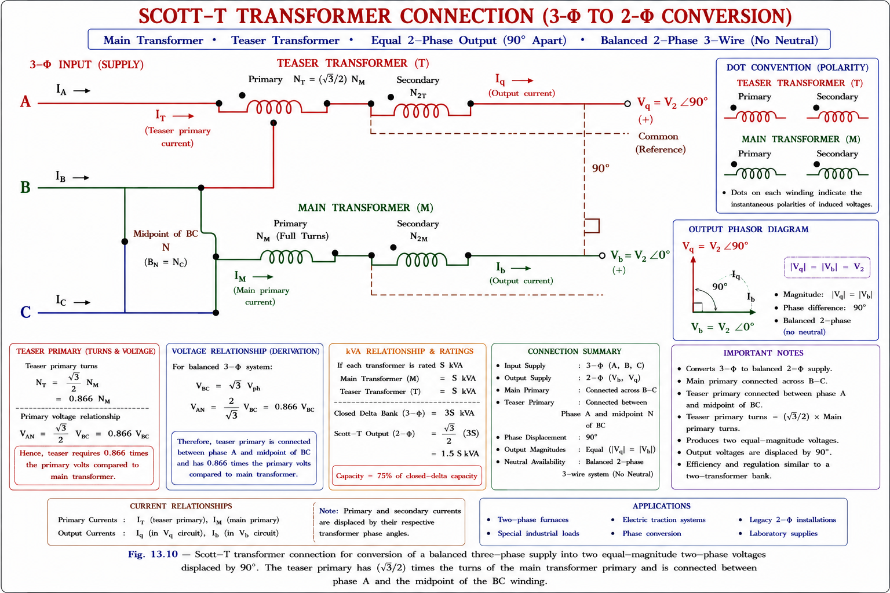

Complete coverage of 3-φ transformer theory — single-phase power analysis, polarity tests, vector (phasor) groups, winding connections (Yy, Dd, Yd, Dy), Scott-T conversion, open-delta (V) connection, and practical applications. Includes GATE & IES previous year questions with solutions.
In AC circuits, instantaneous voltage and current are sinusoidal: \(v = V_m \sin\omega t\) and \(i = I_m \sin(\omega t - \phi)\), where \(\phi\) is the power factor angle. The instantaneous power is the product \(p = v \cdot i\).[1]

Expanding the product \(p = v \cdot i\):
A single-phase power supply suffers from a double-frequency pulsating component \(VI\cos(2\omega t - \phi)\). This creates mechanical vibration in motors and transformers. Three-phase power eliminates this pulsation — total 3-φ power is perfectly constant in balanced conditions.
The average (real) power for 1-phase is \(P = VI\cos\phi\), while for 3-phase balanced systems: \(P_{3\phi} = \sqrt{3}\,V_L I_L \cos\phi = 3\,V_{ph} I_{ph} \cos\phi\).
A 3-φ transformer can be constructed as either a 3-limb core-type (single unit) or as a bank of three 1-φ transformers. The choice has important practical implications.
3000 kVA options: Option 1 = 1 × 3000 kVA, 3-φ unit. Option 2 = 9 × 1000 kVA, 1-φ TF connected in 3-φ bank (3 operating + 3 standby + 3 spare for large installations). IES exams often ask the advantage of each arrangement.
The polarity test determines whether the HV and LV windings are wound in the same direction (subtractive polarity) or opposite directions (additive polarity). This is critical before paralleling transformers.[2]
When the dotted terminals are on opposite ends of the transformer and a voltmeter is connected across A₁–a₁ (outer terminals), the voltmeter reads the sum of HV and LV voltages: \(V_{measured} > V_{HV}\).

When both dotted terminals are on the same side, the voltmeter reads the difference: \(V' = V_{HV} - V_{LV}\), so \(V' < V_{HV}\). This is the standard preferred polarity in power transformers in most countries.

If the measured voltage V′ exceeds the supply voltage → Additive polarity. If V′ is less than supply voltage → Subtractive polarity. Most power transformers use subtractive polarity. Polarity must be same for paralleling.
A phasor group (or vector group) specifies the phase displacement between the HV and LV windings of a 3-φ transformer. It is indicated using a clock notation — the HV phasor points to 12 o'clock, and the LV phasor angle is read like a clock hand.[2]
| Group | Phase Displacement | Examples | Applications |
|---|---|---|---|
| Group 1 | 0° (in-phase) | Yy0, Dd0, Dz0 | HV/LV same phase; parallel operation |
| Group 2 | 180° | Yy6, Dd6, Dz6 | Phase reversal between HV and LV |
| Group 3 | −30° (lagging) | Yd1, Dy1, Yz1 | Step-down distribution; LV lags HV by 30° |
| Group 4 | +30° (leading) | Yd11, Dy11, Yz11 | Step-down; LV leads HV by 30° |
In the notation Yd11: Y = HV winding star (Y) connected; d = LV winding delta (Δ) connected; 11 = LV phasor leads HV by 30° (11 o'clock position). Capital letter → HV side; lowercase → LV side.

In the Yy0 connection, both HV and LV windings are connected in star (Y). The turns ratio is \(a_t = N_{HV}/N_{LV}\), with the HV neutral at N and LV neutral at n.[1]

For all 3-φ transformer connections, \(S_{LV} = S_{HV}\) — the kVA rating is the same on both sides regardless of the winding configuration. This is a favourite one-liner in GATE papers.
The Yy6 connection is identical to Yy0 in physical construction, except the LV winding direction is reversed, giving a 180° phase shift. The voltage ratios remain the same as Yy0, but every LV phasor is inverted.
In the Dd0 connection, both HV and LV are delta-connected, in phase with each other. The British convention for Δ–Δ is that HV side Δ and LV side Δ have the same combinations: a₁b₂, b₁c₂, c₁a₂ on the LV side.[2]

Same as Dd0 with LV winding reversed, giving 180° phase displacement. The voltage magnitude ratios are identical to Dd0 — only the phase orientation flips.
In Yd connections, the HV side is star (Y) and LV side is delta (Δ). The subscript 1 means LV lags HV by 30° (Group 3); subscript 11 means LV leads HV by 30° (Group 4).[1]

Identical to Yd1 but LV phasor leads HV by 30°. In India, Yd11 is the standard for most HV transmission step-down transformers (132/33 kV, 33/11 kV). The subscript "11" means 11 × 30° = 330° = −30° from the HV reference, which equals +30° lead in standard convention.
In Indian power system practice: Yd11 is standard for step-down transformers. Dy11 is used for step-up (generator transformers). Yy0 is used in auto-transformers. Knowing these conventions is directly tested in IES ESE (E&T) examinations.
In Dy connections, the HV side is delta (Δ) and LV side is star (Y). In Dy1, LV lags HV by 30°; in Dy11, LV leads HV by 30°. The delta HV side limb carries \(I/\sqrt{3}\) of the line current.[2]

The choice of winding connection depends on voltage level, capacity, neutral requirements, and load type. The following rules guide practical selection:[3]
| Connection | Best For | Why |
|---|---|---|
| Y–HV side | High voltage, low capacity | Phase voltage = Line/√3, so insulation requirement is lower; neutral earthing possible |
| Δ–LV side | Low voltage, high capacity | Line voltage = Phase voltage, handles higher currents better |
| Y–Δ (step down) | Primary distribution (33/11 kV) | Natural star neutral on HV for earthing; delta LV for heavy loads |
| Δ–Y (step up) | Generator transformers | Delta on generator side eliminates triplen harmonics; star HV for EHV transmission |
| Y–Y | Autotransformers, auto grids | Neutral available both sides; but susceptible to harmonic problems without tertiary delta |
| Δ–Δ | LV high-capacity 3-φ loads | No neutral needed; can operate as open-delta at 57.7% if one unit removed |
Y–Y connection appears attractive for HV applications but is seldom used alone because of problems with magnetising current harmonics, unbalanced loads, and unbalanced faults. It is almost always used with a tertiary delta winding (Yyy or Yyd) to provide a path for triplen (3rd harmonic) currents.
In a Δ–Δ bank of three 1-φ transformers, if one unit is removed, the remaining two can supply 3-φ power in open delta (V connection) at 57.7% of the original bank capacity. This is critical emergency operation knowledge.
The secondary distribution transformer rule: A 4-wire Y connection on the LV side is used (4-wire = 3 phases + neutral) to feed single-phase and three-phase mixed loads in the 2° distribution system.
When one transformer in a Δ–Δ bank is removed or fails, the remaining two can still supply balanced 3-φ power in the open-delta or V-connection. This is an emergency or planned configuration.[1]

\(\dfrac{S_{Vee}}{S_{\Delta\Delta}} = \dfrac{1}{\sqrt{3}} \approx 57.7\%\)
Each transformer in V-connection is loaded at \(86.6\%\) of its rating (not 100%), because the two transformers do not share the load equally in terms of power factor — one operates at \(\phi + 30°\) and the other at \(\phi - 30°\).
The Scott-T connection uses two specially designed single-phase transformers — the Main transformer and the Teaser transformer — to convert 3-phase supply to a balanced 2-phase supply (or vice versa). It is used to supply 2-phase induction furnaces, 2-phase motors, and to interlink 3-φ and 2-φ systems.[3]

1. Teaser primary has 86.6% (√3/2) of main transformer turns. 2. Both outputs are equal magnitude and 90° apart. 3. Smain/Steaser = 2/√3 ≈ 1.15. 4. Input is 3-φ balanced; output is 2-φ balanced. 5. Used for electric furnaces, 2-φ motors.
Step 1: Motor full-load input kVA
Output = 50 HP = 50 × 746 = 37300 W
\[ S_{FL} = \frac{P_{out}}{\eta \cdot \cos\phi} = \frac{37300}{0.9 \times 0.85} = \frac{37300}{0.765} \approx 48.76 \text{ kVA} \]
Step 2: LV (440 V star) line current
\[ I_{LV\_line} = \frac{S_{FL}}{\sqrt{3} \times 440} = \frac{48760}{\sqrt{3} \times 440} \approx 63.98 \text{ A} \]
Step 3: HV (6600 V delta) line and winding current
Turns ratio (line-to-line): 6600/440 = 15. LV is star, HV is delta.
\[ I_{HV\_line} = I_{LV\_line} \times \frac{440}{6600} = 63.98 \times \frac{1}{15} \approx 4.265 \text{ A} \]
Since HV is delta, each winding carries: \(I_{winding} = I_{line}/\sqrt{3} = 4.265/\sqrt{3} \approx 2.46 \text{ A}\)
LV (star) winding current = 63.98 A | HV (delta) winding current = 2.46 A | HV line current = 4.27 A
Let \(V_b = 80\angle 0°\), \(V_a = 80\angle 90°\) (teaser output)
Main transformer ratio: \(a_m = 6600/80 = 82.5\)
Teaser ratio: \(a_T = (\sqrt{3}/2) \times 82.5 = 71.45\)
\[ I_b = \frac{800 \times 10^3}{80 \times 0.8} \angle -\cos^{-1}(0.8) = 12500 \angle -36.87° \text{ A} \]
\[ I_a = \frac{800 \times 10^3}{80 \times 0.8} \angle (90° - 36.87°) = 12500 \angle 53.13° \text{ A} \]
Referred to 3-φ side:
\[ \vec{I}_{BC} = I_b / a_m = 12500/82.5 \angle -36.87° = 151.5 \angle -36.87° \text{ A} \]
\[ \vec{I}_A = I_a / a_T = 12500/71.45 \angle 53.13° = 174.95 \angle 53.13° \text{ A} \]
\[ \vec{I}_B = \vec{I}_{BC} - \frac{\vec{I}_A}{2} = 174.96 \angle -66.87° \text{ A} \]
\[ \vec{I}_C = -\vec{I}_{BC} - \frac{\vec{I}_A}{2} = 174.96 \angle 178.13° \text{ A} \]
\(I_A = 174.95\angle 53.13°\) A, \(\;I_B = 174.96\angle -66.87°\) A, \(\;I_C = 174.96\angle 178.13°\) A
\[ I_b = \frac{800 \times 10^3}{80 \times 0.707} \angle -45° = 14144 \angle -45° \text{ A} \]
\[ I_a = \frac{500 \times 10^3}{80 \times 1.0} \angle 90° = 6250 \angle 90° \text{ A} \quad \text{(UPF, V at 90°)} \]
\[ \vec{I}_{BC} = 14144/82.5 \angle -45° = 171.45 \angle -45° \text{ A} \]
\[ \vec{I}_A = 6250/71.45 \angle 90° = 87.47 \angle 90° \text{ A} \]
\[ \vec{I}_B = \vec{I}_{BC} - \vec{I}_A/2 = 204.72 \angle -53.69° \text{ A} \]
\[ \vec{I}_C = -\vec{I}_{BC} - \vec{I}_A/2 = 143.89 \angle 147.47° \text{ A} \]
\(I_A = 87.47\angle 90°\) A, \(\;I_B = 204.72\angle -53.69°\) A, \(\;I_C = 143.89\angle 147.47°\) A
\(\phi = \cos^{-1}(0.866) = 30°\) lag
In V-connection, one transformer C operates at \((\phi + 30°) = 60°\) lag (PF = 0.5) and the other A operates at \((\phi - 30°) = 0°\) (unity PF).
\[ \vec{S}_C = \frac{1000}{\sqrt{3}} \angle(30° + 30°) = 577.4 \angle 60° \text{ kVA at PF } 0.5 \text{ lag} \]
\[ \vec{S}_A = \frac{1000}{\sqrt{3}} \angle(30° - 30°) = 577.4 \angle 0° \text{ kVA at PF } 1.0 \]
Both transformers supply equal kVA = 577.4 kVA each, but at different power factors.
Each transformer kVA = 577.4 kVA = 1000/√3 kVA. Transformer C: PF = 0.5 lag (60°). Transformer A: PF = 1.0 (unity).
Magnetising current \(S_0 = \sqrt{3} \times 11 \times 8 \angle 90° = 57.158 \angle 90°\) kVA
Secondary load: \(S_2 = 600\angle\cos^{-1}(0.8) = 600\angle -36.87°\) kVA
Tertiary load: \(S_3 = \frac{150}{\cos\phi_3}\angle\phi_3\) kVA (assuming lagging PF)
Power balance (KVA): \(S_1 = S_2 + S_3 + S_0\)
\[ \sqrt{3} \times 11 \times I_1 \angle\cos^{-1}(0.82) = 600\angle -36.87° + 150(1+j\tan\phi_3) + 57.158\angle 90° \]
\[ 15.623 I_1 + j10.905 I_1 = 630 + j\left[360 + 150\tan\phi_3 + 33\sqrt{3}\right] \]
Equating real parts: \(I_1 = 630/15.623 = \mathbf{40.32 \text{ A}}\)
Equating imaginary parts and solving: \(\phi_3 = 8.86°\)
\[ I_3(\text{line}) = \frac{150 \times 10^3}{\sqrt{3} \times 0.4 \times 10^3 \times \cos(8.86°)} = 218.9 \text{ A} \]
\[ I_3(\text{phase}) = \frac{218.9}{\sqrt{3}} = \mathbf{126.4 \text{ A}} \]
\(I_1 = 40.32\) A (primary), \(\;I_3 = 126.4\) A (3° phase current)
A 3-φ transformer has its primary connected in delta and secondary in star. The secondary voltage lags the primary by 30°. The transformer's phasor group designation is:
Secondary (LV) lags primary (HV) by 30°. D = HV delta, y = LV star. Lag 30° = subscript 1 (clock position 1 = 30° lag). Answer: Dy1. Subscript 11 would be 30° lead.
Three identical single-phase transformers are connected in Δ–Δ to supply a balanced load. If one transformer is removed, the remaining bank can supply what fraction of the original load?
\(S_{Vee}/S_{\Delta\Delta} = 1/\sqrt{3} = 57.7\%\). Note: Each remaining TF operates at 86.6% load — but together they supply only 57.7% of the three-transformer bank, not 66.7% (two-thirds). This is a very common trap.
In a Scott-T transformer connection converting 3-φ to 2-φ, the teaser transformer's primary has how many turns compared to the main transformer's primary?
The teaser primary is connected from phase A to the midpoint M of BC. Voltage across AM = \(\frac{\sqrt{3}}{2}V_{line}\). To get the same secondary voltage as the main, turns ratio must be adjusted: \(N_T = \frac{\sqrt{3}}{2} N_1 = 0.866 N_1\).
Which of the following statements about Δ–Y step-up transformers (generator transformers) is CORRECT?
Generator transformers use Dy11 (Delta on LV = generator side). The delta provides a circulating path for 3rd harmonic (triplen) currents internally, so they don't appear in the star-HV line. This is the primary reason for delta on the generator side.
The instantaneous power in a single-phase AC circuit with voltage \(v = V_m\sin\omega t\) and current \(i = I_m\sin(\omega t - \phi)\) contains a component at:
\(p = VI\cos\phi - VI\cos(2\omega t - \phi)\). The first term is a constant (DC component = average power). The second term oscillates at \(2\omega\) (double frequency). So single-phase power has both DC and 2ω components. Three-phase power is purely DC (constant).
\(p = VI\cos\phi - VI\cos(2\omega t-\phi)\). Double frequency component causes vibration. 3-φ power is constant.
Additive: V′ > V. Subtractive: V′ < V. Must match before paralleling. Standard: subtractive.
Group 1: 0° (Yy0, Dd0). Group 2: 180°. Group 3: −30° (Yd1, Dy1). Group 4: +30° (Yd11, Dy11).
\(S_{Vee}/S_{\Delta\Delta} = 57.7\%\). Each TF at 86.6% load. Used for emergency operation or staged expansion.
Teaser = 86.6% of main turns. Output 90° apart, equal magnitude. \(S_m/S_T = 1.155\). 3-φ ↔ 2-φ conversion.
Y–HV: high V, low capacity. Δ–LV: low V, high capacity. Δ eliminates triplen harmonics. SLV = SHV always.
Have a question on 3-φ transformer connections, vector groups, Scott-T, or worked examples? Type below or pick a suggestion.
Transformer Equivalent Circuit, Per-Unit System, Voltage Regulation, Efficiency, and Parallel Operation — with GATE & IES exam concepts and solved numericals.
All technical content is derived from the following standard textbooks. No content is reproduced verbatim — all explanations, examples, numerical values, and diagrams are original to Aarova AI.